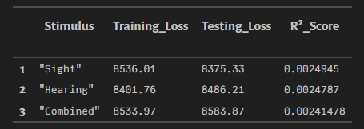
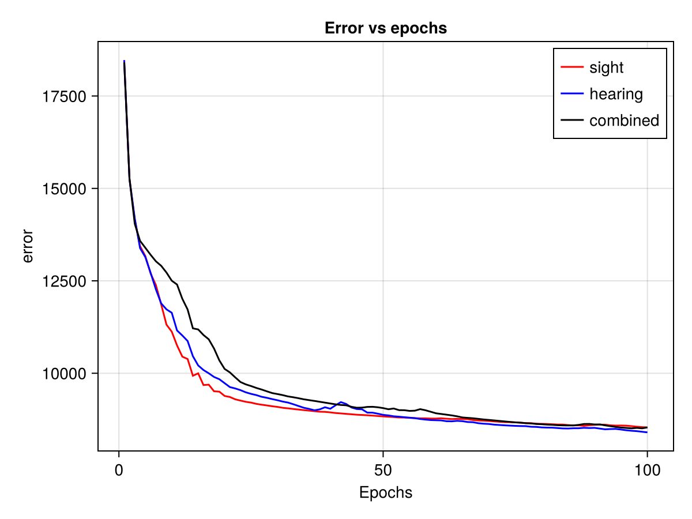

Pluto.jl Notebook Documentation
Overview
This notebook implements a deep recurrent encoder for analyzing sensory stimuli (sight, hearing, and combined) using the Lux library in Julia. The data is simulated and then trained under three conditions: sight-only, hearing-only, and combined stimuli. Results are plotted to show the differences in predictions.
Setup
Activating Environment
using Pkg
Pkg.activate("../../docs")Activates the Julia environment located at ../../docs.
Importing Packages
using Random
using PlutoLinks
using Lux
using LuxCUDA
using CairoMakie
using Statistics
using StatsModels
using Plots
using StableRNGs
using DataFramesLoads the required libraries for neural network modeling, plotting, and statistical analysis.
Importing Custom Encoder
@revise using DeepRecurrentEncoderImports the DeepRecurrentEncoder module with automatic reloading of changes.
Loading Test Data
testdata = @ingredients("../testdata.jl")Loads the test dataset from testdata.jl.
Setting Random Seed
rng = StableRNG(1)Define a random number generator for the data generation module
Defining Formulas
f_hearing = @formula 0 ~ 0 + hearing
f_sight = @formula 0 ~ 0 + sight
f_combined = @formula 0 ~ 0 + sight + hearingDefines formulas to model the effect of sight, hearing, and combined stimuli on the response variable.
Simulating Data
data, evts = testdata.simulate_data(rng, 100; sfreq=100, sight_effect=1);Simulates data with a customizable sight effect.
Initializing Loss and Prediction Variables
Separate variables for storing training loss, test loss, and predictions are initialized for each stimulus type.
loss_epoch_data_sight = []
loss_epoch_opt_data_sight = []
loss_test_opt_sight = []
y_pred_sight = zeros(Float64, 44, 227, 10)(Similar blocks exist for hearing and combined stimuli.)
Training Models
Enable/Disable GPU usage.
use_gpu = falseEach block trains a DeepRecurrentEncoder model for each stimulus type. The model is trained for 20 epochs with a learning rate of 0.01 and a batch size of 256.
Training with Sight Stimulus
dre_sight, ps_sight, st_sight, loss_epoch_data_recieved_sight, loss_epoch_rsquared_data_sight = fit(DRE, Float32.(data[:, 1:end÷2*2, :]) |> x -> use_gpu ? CuArray(x) : x, f_sight, evts; n_epochs=20, lr=0.01, batch_size=256, hidden_chs=100)
l_sight, y_pred_sight[:, :, :] = DeepRecurrentEncoder.test(dre_sight, (Float32.(data[:, 1:end÷2*2, :]) |> x -> use_gpu ? CuArray(x) : x), f_sight, evts, ps_sight, st_sight; subset_index=1:10, loss_function=mse)
push!(loss_epoch_data_sight, loss_epoch_data_recieved_sight)
push!(loss_epoch_opt_data_sight, loss_epoch_rsquared_data_sight)
push!(loss_test_opt_sight, l_sight)(Similar blocks exist for hearing and combined stimuli.)
Results Summary
df = DataFrame(
Stimulus = ["Sight", "Hearing", "Combined"],
Training_Loss = [loss_epoch_data_sight[1][end], loss_epoch_data_hearing[1][end], loss_epoch_data_combined[1][end]],
Testing_Loss = [loss_test_opt_sight[1], loss_test_opt_hearing[1], loss_test_opt_combined[1]],
R²_Score = [mean(loss_epoch_opt_data_sight[1]), mean(loss_epoch_opt_data_hearing[1]), mean(loss_epoch_opt_data_combined[1])]
)
dfPrints the summary of training loss, testing loss, and R² score for each trained model.

Error vs Epochs
f_ = Figure()
ax1_ = Axis(f_[1,1], xlabel="Epochs", ylabel="error", title="Error vs epochs")
lines!(ax1_, loss_epoch_data_sight[1], label="sight", color=:red)
lines!(ax1_, (loss_epoch_data_hearing[1]), label="hearing", color=:blue)
lines!(ax1_, (loss_epoch_data_combined[1]), label="combined", color=:black)
axislegend(ax1_)
f_
Conclusion
- Three models were trained to predict sensory responses to sight, hearing, and combined stimuli.
- Results show varying loss and R² scores for each stimulus, with combined stimuli performing differently.
- Visualizations provide insights into predictions and training performance.